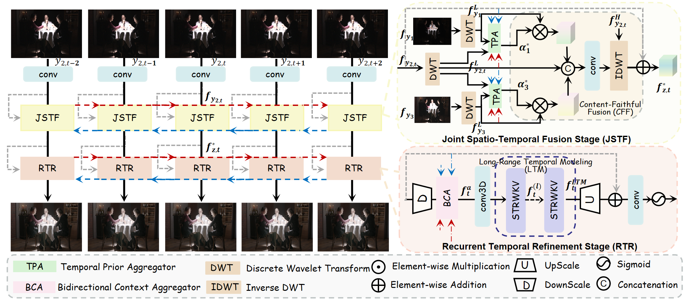

Prevailing High Dynamic Range (HDR) video reconstruction methods are fundamentally trapped in a fragile alignment-and-fusion paradigm. While explicit spatial alignment can successfully recover fine details in controlled environments, it becomes a severe bottleneck in unconstrained dynamic scenes. By forcing rigid alignment across unpredictable motions and varying exposures, these methods inevitably translate registration errors into severe ghosting artifacts and temporal flickering. In this paper, we rethink this conventional prerequisite. Recognizing that explicit alignment is inherently vulnerable to real-world complexities, we propose LoCAtion, a Long-time Collaborative Attention framework that reformulates HDR video generation from a fragile spatial warping task into a robust, alignment-free collaborative feature routing problem. Guided by this new formulation, our architecture explicitly decouples the highly entangled reconstruction task. Rather than struggling to rigidly warp neighboring frames, we anchor the scene on a continuous medium-exposure backbone and utilize collaborative attention to dynamically harvest and inject reliable irradiance cues from unaligned exposures. Furthermore, we introduce a learned global sequence solver. By leveraging bidirectional context and long-range temporal modeling, it propagates corrective signals and structural features across the entire sequence, inherently enforcing whole video coherence and eliminating jitter. Extensive experiments demonstrate that LoCAtion achieves state-of-the-art visual quality and temporal stability, offering a highly competitive balance between accuracy and computational efficiency.

The overview of our framework:
We provide demo videos for our proposed method, including the reference input, feature maps and our final results. Click the scene buttons to switch between scenes. All four video types are displayed simultaneously.
Comparison of our method with state-of-the-art video HDR reconstruction approaches on Real HDR videos. Click the scene buttons to switch between different scenes.
We present real-world results by using an iPhone/ a Camera to capture a set of mid-exposure sequences along with corresponding low/high-exposure pairs. Click the scene buttons to switch between different scenes.